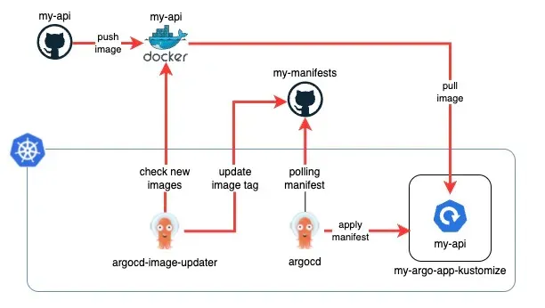
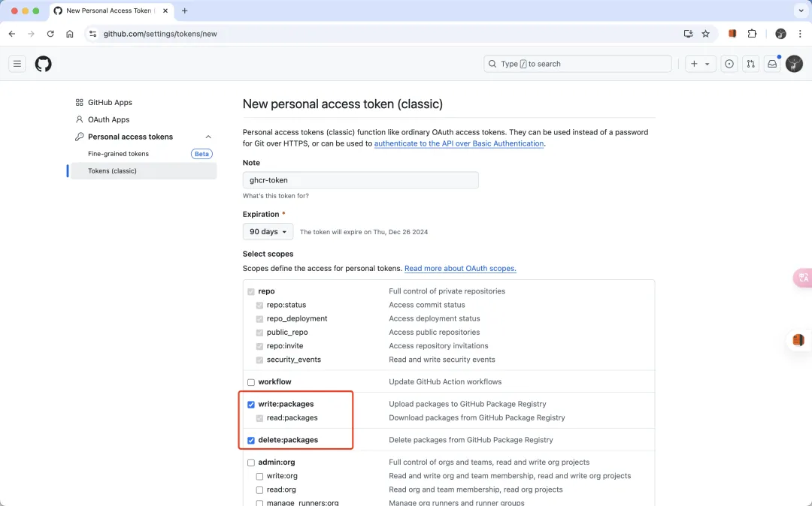
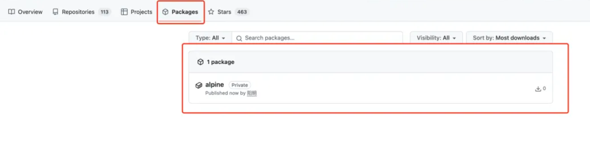
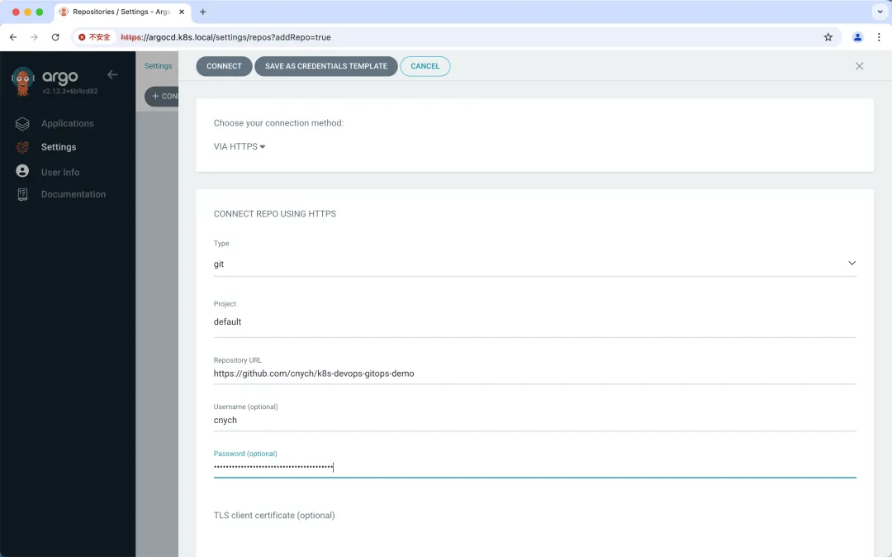
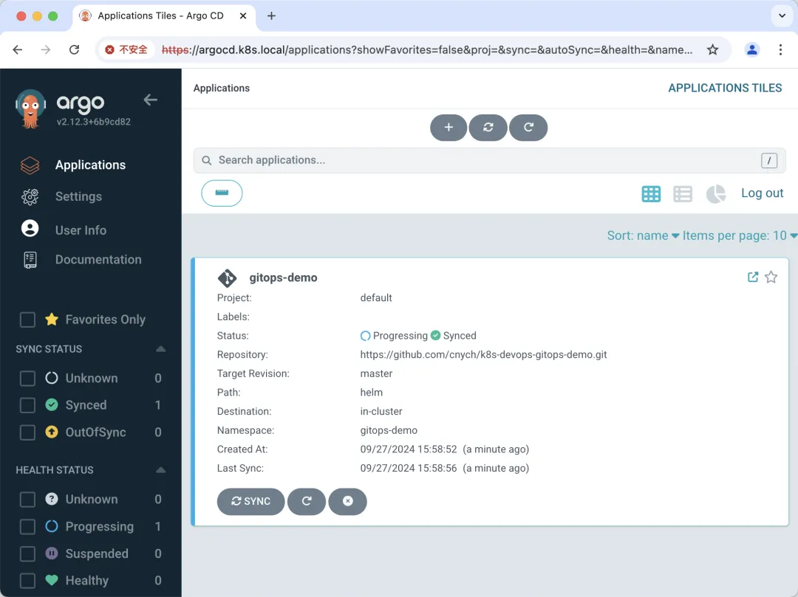
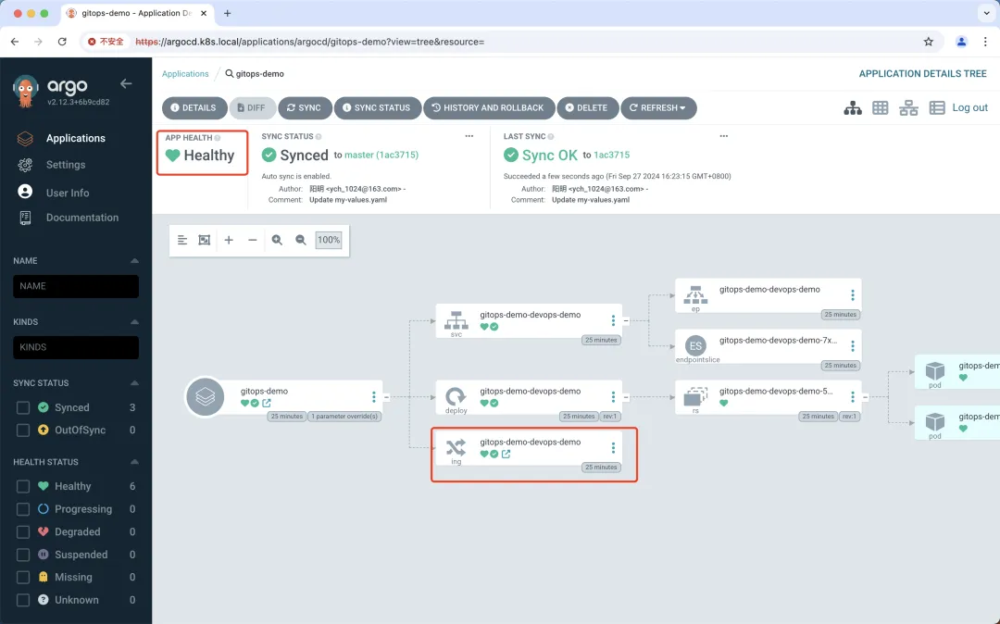
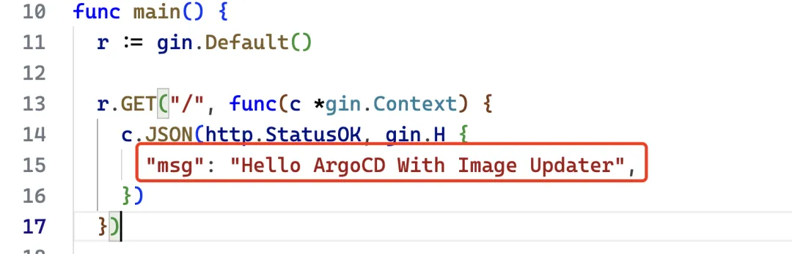
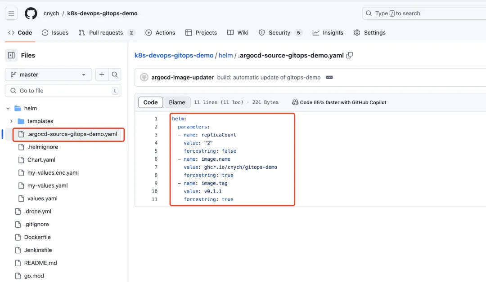
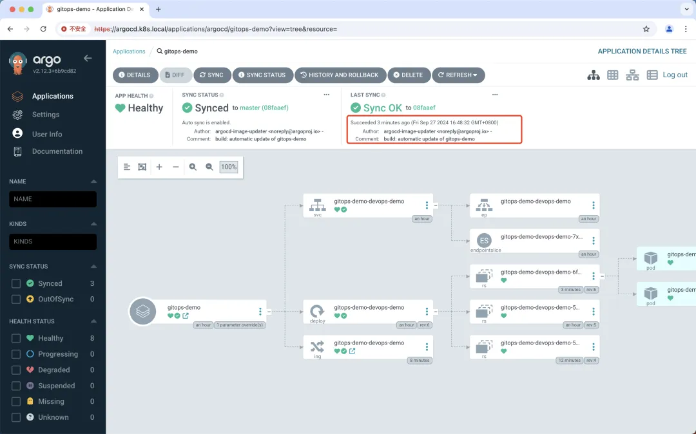

ArgoCD Image Updater
Argo CD Image Updater 是一种自动更新由 Argo CD 管理的 Kubernetes 工作负载的容器镜像的工具。
该工具可以检查与 Kubernetes 工作负载一起部署的容器镜像的新版本，并使用 Argo CD 自动将其更新到允许的最新版本。
它通过为 Argo CD 应用程序设置适当的应用程序参数来工作，类似于 argocd app set --helm-set image.tag=v1.0.1，但以完全自动化的方式。
Argo CD Image Updater 会定期轮询 Argo CD 中配置的应用程序，并查询相应的镜像仓库以获取可能的新版本。
如果在仓库中找到新版本的镜像，并且满足版本约束，Argo CD 镜像更新程序将指示 Argo CD 使用新版本的镜像更新应用程序。
根据您的应用程序自动同步策略，Argo CD 将自动部署新的镜像版本或将应用程序标记为不同步，您可以通过同步应用程序来手动触发镜像更新
它是如何运作的？
Image Updater 程序通过读取 ArgoCD 应用程序资源中的 annotations 来工作，这些注解指定应自动更新哪些镜像。
它会检查指定镜像仓库中是否有较新的标签，如果它们与预定义的模式或规则匹配，则使用这些较新的标签更新应用程序清单。此自动化过程可确保您的应用程序始终运行最新版本的镜像，遵循 GitOps 的一致性和可追溯性原则

Image Updater 基本的工作流程如下所示：
- Annotation 配置：开发人员注解 ArgoCD 应用程序以告诉 Image Updater 要跟踪哪些镜像，包括标签过滤和更新策略的规则。
- 镜像仓库轮询：Image Updater 定期轮询配置的镜像仓库以查找符合指定条件的新标签。
- 自动更新：当找到新的匹配标签时，Image Updater 会自动更新应用程序的 Kubernetes 清单中的镜像标签，并将更改提交回源 Git 存储库。
- 同步变更：ArgoCD 检测到提交的更改，同步更新的清单，并将它们应用到 Kubernetes 集群。
特征
- 更新由 Argo CD 管理且由 Helm 或 Kustomize 工具生成的应用程序镜像
- 根据不同的更新策略更新应用镜像
- semver：根据给定的镜像约束更新到允许的最高版本
- latest：更新到最近创建的镜像标签
- name：更新到按字母顺序排序的列表中的最后一个标签
- digest：更新到可变标签的最新推送版本
- 支持广泛使用的容器镜像仓库
- 通过配置支持私有容器镜像仓库
- 可以将更改写回 Git
- 能够使用匹配器函数过滤镜像仓库返回的标签列表
- 在 Kubernetes 集群中运行，或者可以从命令行独立使用
- 能够执行应用程序的并行更新
另外需要注意的是使用该工具目前有几个限制：
- 想要更新容器镜像的应用程序必须使用 Argo CD 进行管理。不支持未使用 Argo CD 管理的工作负载。
- Argo CD 镜像更新程序只能更新其清单使用 Kustomize 或 Helm 呈现的应用程序的容器镜像，特别是在 Helm 的情况下，模板需要支持使用参数（即image.tag）。
- 镜像拉取密钥必须存在于 Argo CD Image Updater 运行（或有权访问）的同一 Kubernetes 集群中。目前无法从其他集群获取这些机密信息
安装
建议在运行 Argo CD 的同一个 Kubernetes 命名空间集群中运行 Argo CD Image Updater，但这不是必需的。
事实上，甚至不需要在 Kubernetes 集群中运行 Argo CD Image Updater 或根本不需要访问任何 Kubernetes 集群。但如果不访问 Kubernetes，某些功能可能无法使用，所以强烈建议使用第一种安装方法。
运行镜像更新程序的最直接方法是将其作为 Kubernetes 工作负载安装到运行 Argo CD 的命名空间中。这样就不需要任何配置，也不会对你的工作负载产生任何影响。
kubectl apply -n argocd -f https://raw.githubusercontent.com/argoproj-labs/argocd-image-updater/stable/manifests/install.yaml
安装完成后我们就可以在 Argo CD 中看到 Argo CD Image Updater 组件了：
$ kubectl get pods -n argocd
NAME READY STATUS RESTARTS AGE
argocd-notifications-controller-7f85bc8d8-sdqcd 1/1 Running 1 (13d ago) 14d
argocd-applicationset-controller-5f7687fbb4-jl6hf 1/1 Running 1 (13d ago) 14d
argocd-dex-server-665cfbbc8b-nqjf7 1/1 Running 1 (13d ago) 14d
argocd-server-84cb8fdcdc-g4wmt 1/1 Running 1 (13d ago) 14d
argocd-application-controller-0 1/1 Running 1 (13d ago) 14d
argocd-repo-server-bb5d9cc8b-c8f6b 1/1 Running 1 (13d ago) 14d
argocd-redis-5f87c6b5d7-n9d6v 1/1 Running 1 (13d ago) 14d
argocd-image-updater-57b64976b-kgtkf 1/1 Running 0 20s
现在我们就可以直接去监听镜像是否发生了变化，而不需要在 CI 流水线中去手动提交修改资源清单到代码仓库了。
配置
要充分利用 ArgoCD 镜像更新程序，将其配置连接到镜像仓库至关重要，尤其是在使用私有仓库或公共仓库上的私有存储库时。以下是如何配置必要的凭据并了解可用的不同方法。
ArgoCD Image Updater 可以使用以下方法获取凭据
- 从 Kubernetes Secret 中获取凭据：标准的 Docker Pull Secret 或自定义 Secret，凭证格式为
<username>:<password>，比如我们可以用下面的命令来创建一个
kubectl create -n argocd secret docker-registry dockerhub-secret \
--docker-username someuser \
--docker-password s0m3p4ssw0rd \
--docker-server "https://registry-1.docker.io"
这个 secret 可以被引用为 pullsecret:<namespace>/<secret_name> (pullsecret:argocd/dockerhub-secret)。
通用 Secret：通用 Secret 是包含单个键值对的 Secret，键值对可以是任何格式，比如我们可以用下面的命令来创建一个：
kubectl create -n argocd secret generic some-secret \
--from-literal=creds=someuser:s0m3p4ssw0rd
该 secret 可以用 env:<name_of_environment_variable> (env:DOCKER_HUB_CREDS) 的方式引用
- 环境变量：将凭证存储在环境变量中，该变量可以传递到 ArgoCD Image Updater pod，我们可以在 pod 的配置中设置
env:
- name: DOCKER_HUB_CREDS
value: "someuser:s0m3p4ssw0rd"
- Script 脚本：使用以
<username>:<password>格式输出凭据的脚本。
#!/bin/sh
echo "someuser:s0m3p4ssw0rd"
将其引用为 ext:<full_path_to_script>。
我们这里就以 Github 的 Container Registry 为例，来演示下如何使用 ArgoCD Image Updater 来更新镜像。
首先我们在 Github 个人设置页面中创建一个个人访问令牌，如下图所示：

这个 Token 的权限要包括 write:packages和 read:packages，这样我们才能推送和拉取镜像，创建后会得到一个 Token。
然后我们可以在终端或命令行中，使用 GitHub 用户名和 GitHub 的个人访问令牌（PAT）登录 GitHub Container Registry。
export PAT=<your-token>
echo $PAT | docker login ghcr.io -u <your-github-username> --password-stdin
将替换为个人访问令牌，将替换为 GitHub 用户名。
登录成功后我们可以使用以下命令将 Docker 镜像标记为 GitHub Container Registry 镜像：
docker tag <your-image-name>:<tag> ghcr.io/<your-github-username>/<your-image-name>:<tag>
将 <your-image-name>:<tag> 替换为本地 Docker 镜像名与 tag 名，将 <your-github-username> 替换为 GitHub 用户名，<tag> 替换想要使用的标签（例如默认的 latest 标签）。
然后使用以下命令将 Docker 镜像推送到 GitHub Container Registry 即可：
docker push ghcr.io/<your-github-username>/<your-image-name>:<tag>
完成以上步骤后，就可以在 GitHub 个人账号的 的 Packages 部分看到 Docker 镜像了，但是该镜像默认为 private 镜像，Pull 使用时需要先登录

kubectl create -n argocd secret docker-registry ghcr-secret \
--docker-username=cnych \
--docker-password=$PAT \
--docker-server="https://ghcr.io"
设置凭据后，将它们配置在 ArgoCD 镜像更新程序的配置中，以通过镜像仓库进行身份验证，我们可以修改镜像更新程序的配置：
apiVersion: v1
kind: ConfigMap
metadata:
name: argocd-image-updater-config
namespace: argocd
data:
registries.conf: |
registries:
- name: ghcr-hub
api_url: https://ghcr.io # 镜像仓库地址
credentials: pullsecret:argocd/ghcr-secret # 凭据
defaultns: library # 默认命名空间
default: true # 默认仓库
上面配置中我们指定了 GitHub 镜像仓库的凭据为 pullsecret:argocd/ghcr-secret，这样 ArgoCD Image Updater 在访问 ghcr.io 时就会使用这个凭据。
接下来我们还需要将 ArgoCD Image Updater 与 Git 集成，这也是重点，这样 ArgoCD Image Updater 就可以将镜像更新直接提交回源 Git 仓库。
我们可以在 ArgoCD 的 Dashboard 中先添加一个 Git 仓库 https://github.com/test/k8s-devops-gitops-demo：

接下来我们可以按照正常使用方式创建一个新的 Application 对象，对应的资源清单文件如下所示：
apiVersion: argoproj.io/v1alpha1
kind: Application
metadata:
name: gitops-demo
namespace: argocd
spec:
destination:
namespace: gitops-demo
server: https://kubernetes.default.svc
project: default
source:
path: helm # 从 Helm 存储库创建应用程序时，chart 必须指定 path
repoURL: https://github.com/cnych/k8s-devops-gitops-demo.git
targetRevision: master
helm:
parameters:
- name: replicaCount
value: "2"
valueFiles:
- my-values.yaml
syncPolicy:
automated:
prune: true
selfHeal: true
syncOptions:
- CreateNamespace=true
直接创建上面的资源清单文件后，ArgoCD 会自动创建一个 Application 资源对象，并且会自动同步到 Git 仓库中，我们可以在 Git 仓库中看到对应的资源清单文件

如果该应用出现了如下所示的错误信息：
Namespace gitops-demo SyncFailed resource :Namespace is not permitted in project default
则表面当前使用的 project 没有权限创建 namespace，我们只需要为其添加对应的权限即可：
apiVersion: argoproj.io/v1alpha1
kind: AppProject
metadata:
name: default
namespace: argocd
spec:
clusterResourceWhitelist: # 白名单，表示允许访问的资源
- group: "*"
kind: "*"
destinations:
- name: "*"
namespace: "*"
server: "*"
sourceRepos:
- "*"
我们可以使用 argocd app get 命令来查看 Application 资源对象的状态：
$ argocd app get argocd/gitops-demo
Name: argocd/gitops-demo
Project: default
Server: https://kubernetes.default.svc
Namespace: gitops-demo
URL: https://grpc.argocd.k8s.local/applications/gitops-demo
Source:
- Repo: https://github.com/cnych/k8s-devops-gitops-demo.git
Target: master
Path: helm
Helm Values: my-values.yaml
SyncWindow: Sync Allowed
Sync Policy: Automated (Prune)
Sync Status: Synced to master (53d91ed)
Health Status: Progressing
GROUP KIND NAMESPACE NAME STATUS HEALTH HOOK MESSAGE
Namespace gitops-demo Running Synced namespace/gitops-demo created
apps Deployment default gitops-demo-helm-guestbook Succeeded Pruned pruned
Service default gitops-demo-helm-guestbook Succeeded Pruned pruned
Service gitops-demo gitops-demo-devops-demo Synced Healthy service/gitops-demo-devops-demo created
apps Deployment gitops-demo gitops-demo-devops-demo Synced Progressing deployment.apps/gitops-demo-devops-demo created
networking.k8s.io Ingress gitops-demo gitops-demo-devops-demo Synced Progressing ingress.networking.k8s.io/gitops-demo-devops-demo created
需要注意要在目标命名空间中添加 Image Pull Secret。
正常我们这个应用就可以运行了：
$ curl http://gitops-demo.k8s.local/
{"msg":"Hello Tekton On GitLab With ArgoCD"}
但是在 Dashboard 中我们可以看到应用虽然已经是 Synced 状态，但是 APP HEALTH 一直显示为 Progressing 状态。
这是因为 ArgoCD 的健康状态机制引起的，我们可以在源码
https://github.com/argoproj/gitops-engine/blob/master/pkg/health/health_ingress.go#L7
中看到健康状态的检查逻辑。
func getIngressHealth(obj *unstructured.Unstructured) (*HealthStatus, error) {
ingresses, _, _ := unstructured.NestedSlice(obj.Object, "status", "loadBalancer", "ingress")
health := HealthStatus{}
if len(ingresses) > 0 {
health.Status = HealthStatusHealthy
} else {
health.Status = HealthStatusProgressing
}
return &health, nil
}
他需要检查 Ingress 资源对象的 status.loadBalancer.ingress 字段是否为空，如果为空则表示健康状态为 Progressing，否则为 Healthy，但实际情况却是并不是所有的 Ingress 资源对象都会自动生成 status.loadBalancer.ingress 字段，比如我们这里就并没有生成。
这个时候我们可以通过配置 argocd-cm 的配置资源来修改健康状态检查逻辑，添加如下所示的配置：
apiVersion: v1
kind: ConfigMap
metadata:
name: argocd-cm
namespace: argocd
data:
resource.customizations: |
networking.k8s.io/Ingress:
health.lua: |
hs = {}
if obj.metadata ~= nil and obj.metadata.creationTimestamp ~= nil then
hs.status = "Healthy"
hs.message = "Ingress 已创建"
else
hs.status = "Progressing"
hs.message = "Ingress 正在创建中"
end
return hs
上面的配置表示如果 Ingress 资源对象的 metadata.creationTimestamp 字段不为空，则表示健康状态为 Healthy，否则为 Progressing，更新上面的配置后，我们再次查看应用的健康状态就会发现已经变成了 Healthy 状态：

接下来我们就可以使用 ArgoCD Image Updater 来更新镜像了，修改上面的 Application 资源清单文件，我们需要添加一些注解来指定需要更新的镜像规则策略，如下所示：
apiVersion: argoproj.io/v1alpha1
kind: Application
metadata:
name: gitops-demo
namespace: argocd
annotations:
argocd-image-updater.argoproj.io/image-list: myalias=ghcr.io/cnych/gitops-demo # 指定镜像仓库
argocd-image-updater.argoproj.io/myalias.allow-tags: regexp:^.*$ # 允许所有标签
argocd-image-updater.argoproj.io/myalias.pull-secret: pullsecret:argocd/ghcr-secret # 指定凭据
argocd-image-updater.argoproj.io/myalias.update-strategy: latest # 指定更新策略
# argocd-image-updater.argoproj.io/myalias.ignore-tags: latest, master # 指定忽略的标签
argocd-image-updater.argoproj.io/write-back-method: git # 指定写回方法
argocd-image-updater.argoproj.io/git-branch: master # 指定 Git 分支
argocd-image-updater.argoproj.io/myalias.force-update: "true" # 强制更新
spec:
destination:
namespace: gitops-demo
server: https://kubernetes.default.svc
project: default
source:
path: helm # 从 Helm 存储库创建应用程序时，chart 必须指定 path
repoURL: https://github.com/cnych/k8s-devops-gitops-demo.git
targetRevision: master
helm:
parameters:
- name: replicaCount
value: "2"
valueFiles:
- my-values.yaml
syncPolicy:
automated:
prune: true
selfHeal: true
syncOptions:
- CreateNamespace=true
这个新的资源对象中，我们添加了一些注释，这些注释用于配置 Argo CD Image Updater。这些配置用于指定自动更新容器镜像的策略、参数和相关信息。以下是对这些注释的详细解释：
argocd-image-updater.argoproj.io/image-list: 这个注解定义了应用中使用的镜像列表。argocd-image-updater.argoproj.io/allow-tags: 这个注解指定了允许更新的镜像标签，可以使用正则表达式的方式。argocd-image-updater.argoproj.io/<alias>.pull-secret: 这个注解指定了用于拉取镜像的 Secret。-
argocd-image-updater.argoproj.io/update-strategy:这个注解定义了镜像更新策略。这里的值是 latest，表示使用最新的镜像标签进行更新，还可以指定的值包括：digest、name、semver。- latest: 使用最新的镜像标签进行更新。
- digest: 使用镜像的 digest 进行更新。
- name: 使用镜像的名称进行更新。
- semver: 使用 semver 进行更新
argocd-image-updater.argoproj.io/write-back-method: 这个注解定义了更新后的配置写回方法。git 表示将更新后的配置写回到 Git 仓库。
- git: 将更新后的配置写回到 Git 仓库。
- patch: 使用 kubectl patch 命令更新资源。
-
replace: 使用 kubectl replace 命令更新资源。
-
argocd-image-updater.argoproj.io/git-branch: 这个注解定义了更新后的配置写回到 Git 仓库的分支。
现在我们重新更新 Application 资源对象即可。接下来我们只需要重新推送一个新的镜像到 GitHub Container Registry 即可自动触发 ArgoCD Image Updater 更新镜像。
我们更新下仓库中的 main.go 文件：

现在我们重新构建一个新的镜像并推送到 GitHub Container Registry：
docker build --platform linux/amd64 -t ghcr.io/cnych/gitops-demo:v0.1.1 .
docker push ghcr.io/cnych/gitops-demo:v0.1.1
推送新的镜像后，然后 Argo CD Image Updater 将会每 2 分钟从镜像仓库去检索镜像版本变化，一旦发现有新的镜像版本，它将自动使用新版本来更新集群内工作负载的镜像，并将镜像版本回写到 Git 仓库中去，我们可以去查看 Argo CD Image Updater 的日志变化：
$ kubectl logs -f argocd-image-updater-57b788886d-d4qh5 -n argocd
time="2024-09-27T06:51:32Z" level=info msg="argocd-image-updater v0.14.0+af844fe starting [loglevel:INFO, interval:2m0s, healthport:8080]"
time="2024-09-27T06:51:32Z" level=warning msg="commit message template at /app/config/commit.template does not exist, using default"
time="2024-09-27T08:35:39Z" level=warning msg="\"latest\" strategy has been renamed to \"newest-build\". Please switch to the new convention as support for the old naming convention will be removed in future versions." image_alias=myalias image_name=ghcr.io/cnych/gitops-demo registry_url=ghcr.io
time="2024-09-27T08:35:40Z" level=info msg="Processing results: applications=1 images_considered=1 images_skipped=0 images_updated=0 errors=0"
xxxxxxxxxxxxxxtime="2024-09-27T08:37:40Z" level=info msg="Starting image update cycle, considering 1 annotated application(s) for update"
time="2024-09-27T08:37:40Z" level=warning msg="\"latest\" strategy has been renamed to \"newest-build\". Please switch to the new convention as support for the old naming convention will be removed in future versions." image_alias=myalias image_name=ghcr.io/cnych/gitops-demo registry_url=ghcr.io
time="2024-09-27T08:37:44Z" level=info msg="Setting new image to ghcr.io/cnych/gitops-demo:v0.1.1" alias=myalias application=gitops-demo image_name=cnych/gitops-demo image_tag=latest registry=ghcr.io
time="2024-09-27T08:37:44Z" level=info msg="Successfully updated image 'ghcr.io/cnych/gitops-demo:latest' to 'ghcr.io/cnych/gitops-demo:v0.1.1', but pending spec update (dry run=false)" alias=myalias application=gitops-demo image_name=cnych/gitops-demo image_tag=latest registry=ghcr.io
time="2024-09-27T08:37:44Z" level=info msg="Committing 1 parameter update(s) for application gitops-demo" application=gitops-demo
time="2024-09-27T08:37:44Z" level=info msg="Starting configmap/secret informers"
time="2024-09-27T08:37:44Z" level=info msg="Configmap/secret informer synced"
time="2024-09-27T08:37:44Z" level=info msg="Initializing https://github.com/cnych/k8s-devops-gitops-demo.git to /tmp/git-gitops-demo1873820104"
time="2024-09-27T08:37:44Z" level=info msg="secrets informer cancelled"
time="2024-09-27T08:37:44Z" level=info msg="configmap informer cancelled"
time="2024-09-27T08:37:44Z" level=info msg="git fetch origin --tags --force --prune" dir=/tmp/git-gitops-demo1873820104 execID=acebc
time="2024-09-27T08:37:46Z" level=info msg=Trace args="[git fetch origin --tags --force --prune]" dir=/tmp/git-gitops-demo1873820104 operation_name="exec git" time_ms=1640.146246
time="2024-09-27T08:37:46Z" level=info msg="git config user.name argocd-image-updater" dir=/tmp/git-gitops-demo1873820104 execID=7ec2d
time="2024-09-27T08:37:46Z" level=info msg=Trace args="[git config user.name argocd-image-updater]" dir=/tmp/git-gitops-demo1873820104 operation_name="exec git" time_ms=1.5687190000000002
time="2024-09-27T08:37:46Z" level=info msg="git config user.email noreply@argoproj.io" dir=/tmp/git-gitops-demo1873820104 execID=6e796
time="2024-09-27T08:37:46Z" level=info msg=Trace args="[git config user.email noreply@argoproj.io]" dir=/tmp/git-gitops-demo1873820104 operation_name="exec git" time_ms=1.688394
time="2024-09-27T08:37:46Z" level=info msg="git checkout --force master" dir=/tmp/git-gitops-demo1873820104 execID=403bb
time="2024-09-27T08:37:46Z" level=info msg=Trace args="[git checkout --force master]" dir=/tmp/git-gitops-demo1873820104 operation_name="exec git" time_ms=4.522311
time="2024-09-27T08:37:46Z" level=info msg="git clean -ffdx" dir=/tmp/git-gitops-demo1873820104 execID=b3f03
time="2024-09-27T08:37:46Z" level=info msg=Trace args="[git clean -ffdx]" dir=/tmp/git-gitops-demo1873820104 operation_name="exec git" time_ms=1.429556
time="2024-09-27T08:37:46Z" level=info msg="git -c gpg.format=openpgp commit -a -F /tmp/image-updater-commit-msg441967746" dir=/tmp/git-gitops-demo1873820104 execID=0efc6
time="2024-09-27T08:37:46Z" level=info msg=Trace args="[git -c gpg.format=openpgp commit -a -F /tmp/image-updater-commit-msg441967746]" dir=/tmp/git-gitops-demo1873820104 operation_name="exec git" time_ms=5.239213
time="2024-09-27T08:37:46Z" level=info msg="git push origin master" dir=/tmp/git-gitops-demo1873820104 execID=fcd1f
time="2024-09-27T08:37:47Z" level=info msg=Trace args="[git push origin master]" dir=/tmp/git-gitops-demo1873820104 operation_name="exec git" time_ms=1934.14529
time="2024-09-27T08:37:47Z" level=info msg="Successfully updated the live application spec" application=gitops-demo
time="2024-09-27T08:37:47Z" level=info msg="Processing results: applications=1 images_considered=1 images_skipped=0 images_updated=1 errors=0"
然后在 Git 仓库中我们也可以看到有一条新的 commit 提交记录，可以看到在回写时，ArgoCD Image Updater 并不会直接修改仓库的 values.yaml 文件，而是会创建一个专门用于覆盖 Helm Chart values.yaml 的 .argocd-source-devops-demo.yaml 文件。

自动提交变更后，Argo CD 就会自动同步部署应用了。
当然现在访问应用结果就是我们更改后的内容了：
$ curl http://gitops-demo.k8s.local/
{"msg":"Hello ArgoCD With Image Updater"}

另外我们可以注意到每次 Git 提交都与作者的姓名和电子邮件地址相关联。如果未配置，Argo CD 镜像更新程序执行的提交将使用 argocd-image-updater <noreply@argoproj.io> 作为作者。
您可以使用 --git-commit-user 和 --git-commit-email命令行开关覆盖作者，或在 argocd-image-updater-config ConfigMap 中设置 git.user 和 git.email 即可。
同样我们可以将 Argo CD Image Updater 使用的默认提交消息更改为适合你的方式。可以创建一个简单的模板（使用 Golang Template），并通过将 argocd-image-updater-config ConfigMap 中的密钥 git.commit-message-template 设置为模板的内容来使其可用，例如：
data:
git.commit-message-template: |
build: automatic update of {{ .AppName }}
{{ range .AppChanges -}}
updates image {{ .Image }} tag '{{ .OldTag }}' to '{{ .NewTag }}'
{{ end -}}
模板中提供了两个顶级变量：
.AppName是正在更新的应用程序的名称-
.AppChanges是更新所执行的更改的列表。此列表中的每个条目都是一个结构体，为每个更改提供以下信息：.Image保存已更新图像的全名.OldTag保存更新之前的标签名称或 SHA 摘要.NewTag保存更新为的标签名称或 SHA 摘要